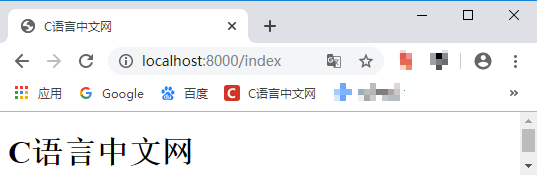

Go语言实现Web服务器
Go语言里面提供了一个完善的 net/http 包，通过 net/http 包我们可以很方便的搭建一个可以运行的 Web 服务器。同时使用 net/http 包能很简单地对 Web 的路由，静态文件，模版，cookie 等数据进行设置和操作。
对于普通的上网过程，系统其实是这样做的：
图：用户访问一个站点的过程
通过上图可以将 Web 服务器的工作原理简单地归纳为：
图：localhost:8000
首先我们准备一个 html 文件，并命名为 index.html，代码如下所示：
Web服务器的工作方式
我们平时浏览网页的时候，会打开浏览器，然后输入网址后就可以显示出想要浏览的内容。这个看似简单的过程背后却隐藏了非常复杂的操作。对于普通的上网过程，系统其实是这样做的：
- 浏览器本身是一个客户端，当在浏览器中输入 URL （网址）的时候，首先浏览器会去请求 DNS 服务器，通过 DNS 获取相应的域名对应的 IP，然后通过 IP 地址找到对应的服务器后，要求建立 TCP 连接；
- 与服务器建立连接后，浏览器会向服务器发送 HTTP Request （请求）包；
- 服务器接收到请求包之后开始处理请求包，并调用自身服务，返回 HTTP Response（响应）包；
- 客户端收到来自服务器的响应后开始渲染这个 Response 包里的主体（body），等收到全部的内容后断开与该服务器之间的 TCP 连接。
图：用户访问一个站点的过程
通过上图可以将 Web 服务器的工作原理简单地归纳为：
- 客户机通过 TCP/IP 协议与服务器建立 TCP 连接；
- 客户端向服务器发送 HTTP 协议请求包，请求服务器里的资源文档；
- 服务器向客户机发送 HTTP 协议应答包，如果请求的资源包含有动态语言的内容，那么服务器会调用动态语言的解释引擎负责处理“动态内容”，并将处理得到的数据返回给客户端；
- 客户机与服务器断开，由客户端解释 HTML 文档，在客户端屏幕上渲染图形结果。
搭建一个简单的 Web 服务器
前面简单介绍了 Web 服务器的工作原理，那么如何用Go语言搭建一个 Web 服务器呢？示例代码如下：
package main
import (
"fmt"
"log"
"net/http"
)
func main() {
http.HandleFunc("/", index) // index 为向 url发送请求时，调用的函数
log.Fatal(http.ListenAndServe("localhost:8000", nil))
}
func index(w http.ResponseWriter, r *http.Request) {
fmt.Fprintf(w, "C语言中文网")
}
使用 go run 命令运行上面的代码：
go run main.go
运行之后并没有什么提示信息，但是命令行窗口会被占用（不能再输入其它命令）。这时我们在浏览器中输入 localhost:8000 可以看到下图所示的内容，则说明我们的服务器成功运行了。图：localhost:8000
提示：运行 Web 服务器会占用命令行窗口，我们可以使用 Ctrl+C 组合键来退出。
上面的代码只是展示了 Web 服务器的简单应用，下面我们来完善一下，为这个服务器添加一个页面并设置访问的路由。首先我们准备一个 html 文件，并命名为 index.html，代码如下所示：
<!DOCTYPE html>
<html lang="en">
<head>
<meta charset="UTF-8">
<title>C语言中文网</title>
</head>
<body>
<h1>C语言中文网</h1>
</body>
</html>
然后将我们上面写的 Web 服务器的代码简单修改一下，如下所示：
package main
import (
"io/ioutil"
"log"
"net/http"
)
func main() {
// 在/后面加上 index ，来指定访问路径
http.HandleFunc("/index", index)
log.Fatal(http.ListenAndServe("localhost:8000", nil))
}
func index(w http.ResponseWriter, r *http.Request) {
content, _ := ioutil.ReadFile("./index.html")
w.Write(content)
}
使用 go run 命令运行：
go run main.go
运行成功后，在浏览器中输入 localhost:8000/index 就可以看到我们所添加的页面了，如下图所示：

图：浏览 localhost:8000/index 页面
图：浏览 localhost:8000/index 页面
关注公众号「站长严长生」，在手机上阅读所有教程，随时随地都能学习。内含一款搜索神器，免费下载全网书籍和视频。

微信扫码关注公众号